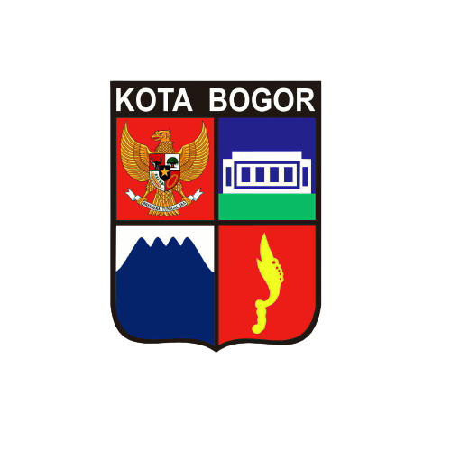
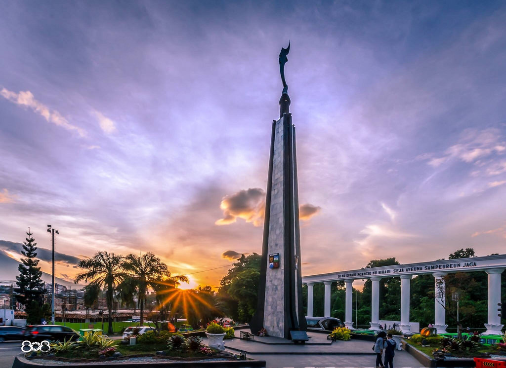

Sejarah
Hampir secara umum penduduk Bogor mempunyai keyakinan bahwa Kota Bogor mempunyai hubungan lokatif dengan Kota Pakuan, ibukota Pajajaran. Asal-usul dan arti Pakuan terdapat dalam berbagai sumber. Di bawah ini adalah hasil penelusuran dari sumber-sumber tersebut berdasarkan urutan waktu:
Naskah Carita Waruga Guru (1750-an). Dalam naskah berbahasa Sunda Kuna ini diterangkan bahwa nama Pakuan Pajajaran didasarkan bahwa di lokasi tersebut banyak terdapat pohon Pakujajar.
K.F. Holle (1869). Dalam tulisan berjudul De Batoe Toelis te Buitenzorg (Batutulis di Bogor), Holle menyebutkan bahwa di dekat Kota Bogor terdapat kampung bernama Cipaku, beserta sungai yang memiliki nama yang sama. Di sana banyak ditemukan pohon paku. Jadi menurut Holle, nama Pakuan ada kaitannya dengan kehadiran Cipaku dan pohon paku. Pakuan Pajajaran berarti pohon paku yang berjajar ("op rijen staande pakoe bomen").
G.P. Rouffaer (1919) dalam Encyclopedie van Niederlandsch Indie edisi Stibbe tahun 1919. Pakuan mengandung pengertian "paku", akan tetapi harus diartikan "paku jagat" (spijker der wereld) yang melambangkan pribadi raja seperti pada gelar Paku Buwono dan Paku Alam. "Pakuan" menurut Fouffaer setara dengan "Maharaja". Kata "Pajajaran" diartikan sebagai "berdiri sejajar" atau "imbangan" (evenknie). Yang dimaksudkan Rouffaer adalah berdiri sejajar atau seimbang dengan Majapahit. Sekalipun Rouffaer tidak merangkumkan arti Pakuan Pajajaran, namun dari uraiannya dapat disimpulkan bahwa Pakuan Pajajaran menurut pendapatnya berarti "Maharaja yang berdiri sejajar atau seimbang dengan (Maharaja) Majapahit". Ia sependapat dengan Hoesein Djajaningrat (1913) bahwa Pakuan Pajajaran didirikan tahun 1433.
R. Ng. Poerbatjaraka (1921). Dalam tulisan De Batoe-Toelis bij Buitenzorg (Batutulis dekat Bogor) ia menjelaskan bahwa kata "Pakuan" mestinya berasal dari bahasa Jawa kuno "pakwwan" yang kemudian dieja "pakwan" (satu "w", ini tertulis pada Prasasti Batutulis). Dalam lidah orang Sunda kata itu akan diucapkan "pakuan". Kata "pakwan" berarti kemah atau istana. Jadi, Pakuan Pajajaran, menurut Poerbatjaraka, berarti "istana yang berjajar"(aanrijen staande hoven).
H. Ten Dam (1957). Sebagai Insinyur Pertanian, Ten Dam ingin meneliti kehidupan sosial-ekonomi petani Jawa Barat dengan pendekatan awal segi perkembangan sejarah. Dalam tulisannya, Verkenningen Rondom Padjadjaran (Pengenalan sekitar Pajajaran), pengertian "Pakuan" ada hubungannya dengan "lingga" (tonggak) batu yang terpancang di sebelah prasasti Batutulis sebagai tanda kekuasaan. Ia mengingatkan bahwa dalam Carita Parahyangan disebut-sebut tokoh Sang Haluwesi dan Sang Susuktunggal yang dianggapnya masih mempunyai pengertian "paku".
Ia berpendapat bahwa "pakuan" bukanlah nama, melainkan kata benda umum yang berarti ibukota (hoffstad) yang harus dibedakan dari keraton. Kata "pajajaran" ditinjaunya berdasarkan keadaan topografi. Ia merujuk laporan Kapiten Wikler (1690) yang memberitakan bahwa ia melintasi istana Pakuan di Pajajaran yang terletak antara Sungai Besar dengan Sungai Tanggerang (disebut juga Ciliwung dan Cisadane). Ten Dam menarik kesimpulan bahwa nama "Pajajaran" muncul karena untuk beberapa kilometer Ciliwung dan Cisadane mengalir sejajar. Jadi, Pakuan Pajajaran dalam pengertian Ten Dam adalah Pakuan di Pajajaran atau "Dayeuh Pajajaran". Sebutan "Pakuan", "Pajajaran", dan "Pakuan Pajajaran" dapat ditemukan dalam Prasasti Batutulis (nomor 1 & 2) sedangkan nomor 3 bisa dijumpai pada Prasasti Kebantenan di Bekasi.
